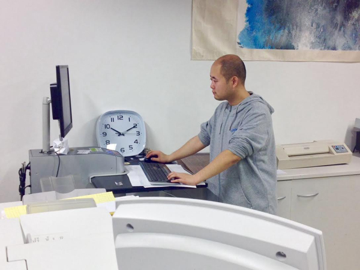
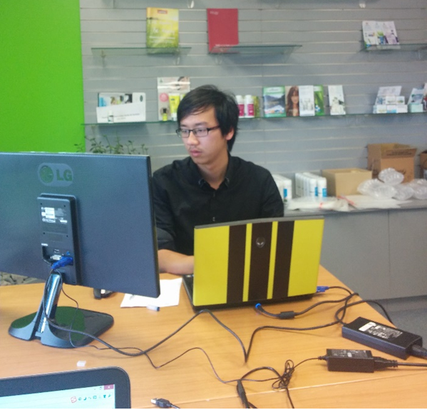

|
Solo
Solo Tu joined Tasman last year and is responsible for Job Search Centre.
Has has Commerce degree in Marketing from Australia and Masters in Management from Massey University, vast experience in job search.
As part of job-seeking, Solo processes and assists students and graduates to contact potential employers and set up interviews, advising on resumé preparation, interview techniques and suitable placements for work experience.
Solo has placed many students in the same field as their studies. Check the student's feedback. Your next employment opportunity is closer than you think!
|
|

|
Lichen song
Lichen Song has been studing a Diploma in Information Technology – Multimedia
at Tasman and was recommended by Solo Tu to a Digital/Printing company
to work as a graphic design. He is responsible for designing brochures, cards and posters for customers.
According to the Lichen Manager, Lichen has been developing abilities to learn new skills and his also has a good manner to talk with clients and adapted fast to the company systems, he is very satisfied with his job.
Lichen Song is also grateful for the opportunity he received to demonstrate his qualifications and knowledge.
|
|

|
Chen Xin
I strong believe Tasman International Academic is an excellent Education Institute for students who really want to learn new technologies and gain experiences in the IT area. I had a good relationship with my teachers who I consider important people to guide me in my studies and assist to achieve my targets.
The students Chen XinIn November/2014 had a job interview in Crazysales Ltd, sales company, located in Rosedale – Auckland.
This opportunity was arranged by Solo Tu, who is responsible for the job-seeking at Tasman. Solo assists students and graduates to contact potential employers and set up to interview arrangements.
|
|
Priyanka
Priyanka Saraf is a contact centre agent who has been in New Zealand for almost four years. Her job involves dealing with phone users who may call for different issues ranging from hardware to network failures.
She claims that the knowledge gained in class "helps me to analyse the problem and strategically troubleshoot it".
Tasman is considered to be a good environment "as teachers and tutors have vast practical experience in this field". She would recommend Tasman as it provides "support for academic as well as non-academic issues".
|